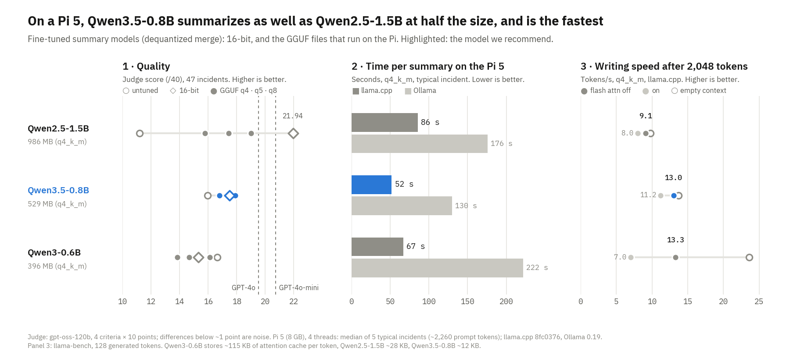
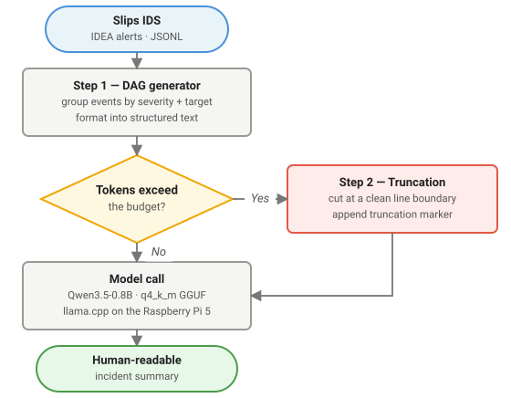

Summarizing Security Alerts on a Raspberry Pi, Part 1: Inference
Part 1 of 2. This post covers inference on the Raspberry Pi. Part 2 covers fine-tuning and evaluation.
1. The Problem
Slips [1], our behavioral IDS, reports what it detects as incidents: one incident per monitored IP and time window, grouping all the correlated detections. The reports are detailed but not easy to read quickly, especially for someone who is not a security specialist. We want Slips to explain each incident in a few clear lines, and to do it on the device where Slips runs, often a really small device like a Raspberry Pi 5, without sending alert data to a cloud service.
Running the language model next to Slips, following an edge AI approach, brings several practical advantages:
- Privacy: alert data never leaves the monitored network.
- Cost: no cloud API fees or per-query charges.
- Offline operation: it works in air-gapped or low-connectivity networks.
- Deployment: the model ships with Slips, which already runs on the Pi.
The obvious alternative, sending the alerts to a cloud API, does not work for the networks Slips targets: there, sending raw incident data to an external service is a policy violation, a privacy risk, or simply impossible because there is no reliable outbound connection.
However, this also means working with 8 GB of RAM, a 4-core ARM Cortex-A76 CPU and no GPU. Every decision below follows from that constraint.
This is the first of two posts. We fine-tuned three small open models for the task, Qwen2.5-1.5B, Qwen3.5-0.8B and Qwen3-0.6B. This post is about running them on the Pi: how a Slips incident becomes a prompt small enough for the device, and what we measured there. The second post, Part 2: Fine-Tuning and Evaluation, covers how the models were trained and how their quality was measured. The short version: on the Pi, Qwen3.5-0.8B summarizes as well as Qwen2.5-1.5B at half the size, and it is the fastest of the three. At full precision Qwen2.5-1.5B is better, but it loses that advantage when quantized to run on the Pi, while Qwen3.5-0.8B loses nothing. The Pi measurements also showed two things we did not expect: the serving runtime matters more than the model, and long prompts slow some models down much more than others.

2. From Slips Alerts to Model Input
Slips [1] is an open-source behavioral network IDS developed at the Stratosphere IPS Lab [2] at the Czech Technical University in Prague. Unlike signature-based tools, Slips builds behavioral profiles of network flows and correlates detections across time windows. It produces its output in the IDEA format [3], a JSON incident schema defined by CESNET.
A Slips session produces a stream of Incident and Event objects. Each Incident aggregates correlated evidence about a source IP during a time window. Each Event is a specific detection: a port scan, a connection to an unusual port, a DNS query to a known C2 domain. Incidents contain from a handful to several thousand events.
Before the model sees any data, a preprocessing step called the DAG generator converts the IDEA JSON into a compact text block (section 2.3).
2.1 An Example
Below is a real incident from our evaluation set, from the raw JSON to the summary written by the fine-tuned Qwen3.5-0.8B (q4_k_m).
Step 1 — Raw IDEA JSON (2 of 31 events, some fields omitted; the full incident is about 13,000 tokens):
// Event 1 of 31
{ "Status": "Event", "Severity": "Medium",
"StartTime": "1970-01-01T07:02:02.550547+00:00",
"Description": "Connection to unknown destination port 449/TCP destination IP 177.251.27.6. threat level: medium.",
"Source": [{ "IP": "192.168.1.113", "Port": [49818] }],
"Target": [{ "IP": "177.251.27.6", "Port": [449] }] }
// Event 2 of 31
{ "Status": "Event", "Severity": "Medium",
"StartTime": "1970-01-01T07:10:41.685141+00:00",
"Description": "Connection to unknown destination port 449/TCP destination IP 209.205.188.238. threat level: medium.",
"Source": [{ "IP": "192.168.1.113", "Port": [49833] }],
"Target": [{ "IP": "209.205.188.238", "Port": [449] }] }
// ... 29 more events
Step 2 — DAG generator output (31 events grouped into 10 bullets, about 1,000 tokens):
Incident: c29b1e6e-adb4-46bd-b4cc-f0b597813abc
Source IP: 192.168.1.113 | Timewindow: 8
Timeline: 1970-01-01 07:00:17 to 1970-01-01 08:00:17
Threat Level: 15.1 | Events: 31
• 07:00-07:03 - 2 events to Horizontal [HIGH]
- Horizontal port scan to port 443/TCP. From 192.168.1.113 to 5 unique destination IPs. ...
- Horizontal port scan to port 449/TCP. From 192.168.1.113 to 5 unique destination IPs. ...
• 07:02 - 9 events to 177.251.27.6:449 [MEDIUM]
- Connection to unknown destination port 449/TCP destination IP 177.251.27.6. threat level: medium. (x9)
• 07:10-07:11 - 9 events to 209.205.188.238:449 [MEDIUM]
- Connection to unknown destination port 449/TCP destination IP 209.205.188.238. threat level: medium. (x9)
• 07:20 - Event to 92.53.91.20 [MEDIUM]
- Multiple reconnection attempts to Destination IP: 92.53.91.20 from IP: 192.168.1.113 reconnections: 5 ...
... (more groups)
Step 3 — Summary by the fine-tuned Qwen3.5-0.8B:
• 07:00-07:22 - Multiple connections to unknown destination port 449/TCP
from IP 192.168.1.113 [MEDIUM]
• 07:02-07:20 - Multiple reconnection attempts to Destination IP 177.251.27.6
from IP 192.168.1.113 [MEDIUM]
• 07:00-07:03 - Horizontal port scan to port 443/TCP from IP 192.168.1.113
to 5 unique destination IPs [HIGH]
Total Evidence: 31 events
Severity breakdown: High: 1, Medium: 2, Info: 0
The model merges the repeated port-449 connections into one line, keeps the horizontal scan as the most important event, and assigns its own severities. 31 JSON objects become three bullets.
2.2 The Token Budget Problem
Slips alerts are large: the raw IDEA JSON of even a small incident is over 10,000 tokens. Giving this directly to a small model is not feasible, for two compounding reasons:
- Speed: on the Pi, every token of input costs time. With llama.cpp the fastest of our models reads about 100 tokens per second and writes about 10.
- Memory: the Pi runs Slips alongside the model, and the available RAM limits how large a context the model can use. We serve the models with an 8,192-token context.
Keeping the input compact is not an optimisation, it is a requirement. The solution is a preprocessing pipeline that runs before the model call.
2.3 Step 1: The DAG Generator
The DAG generator is a simple parser that keeps as much of the original information as possible in as few tokens as possible. It parses the IDEA fields (severity, source, target IP and port, timestamps) and groups events that share the same severity and destination into a single bullet, with a time range and up to three unique raw descriptions.
We call it a DAG (Directed Acyclic Graph) generator because the Slips incident structure is a graph: an Incident references multiple Events through correlation IDs, and Events share targets or severities with each other. The generator traverses this structure and flattens it into a readable, ordered text.1
The compression is large. Some incidents from our evaluation set (tokens counted with the Qwen2.5 tokenizer):
| Events | Raw IDEA JSON (tokens) | After DAG generation (tokens) |
|---|---|---|
| 29 | 11,126 | 304 |
| 31 | 13,028 | 987 |
| 516 | 323,057 | 1,573 |
| 2,987 | 1,236,201 | 4,465 |
| 6,267 | 7,961,852 | 11,002 |
2.4 Step 2: Truncation
Even after DAG generation, the long tail is significant. Across the 513 incidents of our dataset:
| Percentile | Tokens after DAG generation |
|---|---|
| Median (p50) | 1,468 |
| p90 | 11,111 |
| p95 | 13,011 |
| Maximum | 25,903 |
A third of the incidents (168 of 513) are still longer than 4,096 tokens. For those, the Slips integration truncates the DAG at a clean line boundary and appends a marker, so the model knows that the input is incomplete:
- Split the DAG text on newlines.
- Accumulate lines until the next one would exceed the token budget.
- Append
[truncated: showing first ~N tokens of full DAG].
Truncation is not an ideal solution, and the current models never saw the marker during training (Part 2). A better alternative is to split large incidents into chunks, summarize each chunk and merge the partial summaries in a second pass, at the cost of several model calls per incident. This is the next thing we want to explore.
The full inference pipeline:

3. Running on the Raspberry Pi 5
This is the most important part. Everything else (fine-tuning, quantization, dataset design) is in service of making this work on constrained hardware. How the models were trained and how their quality was measured is covered in Part 2; here it is enough to know that, quantized for the Pi, Qwen3.5-0.8B and Qwen2.5-1.5B write summaries of the same quality, and Qwen3-0.6B is less reliable.
3.1 The Three Models
The Pi's memory and CPU rule out most models: beyond about 3B parameters, memory pressure and speed make the device impractical (see our earlier benchmark, How well do LLMs perform on a Raspberry Pi 5? [4]). We compared three small models from the Qwen [5] family:
| Model | Parameters | q4_k_m file | Attention | KV cache per token |
|---|---|---|---|---|
| Qwen2.5-1.5B | 1.5B | 986 MB | 28 full-attention layers | ~28 KB |
| Qwen3.5-0.8B | 0.8B | 529 MB | 6 full-attention + 18 linear-attention layers | ~12 KB |
| Qwen3-0.6B | 0.6B | 396 MB | 28 full-attention layers | ~115 KB |
The last column turned out to matter more than the parameter count (section 3.3).
The models are trained in the standard Hugging Face format, which is not practical on the Pi. We run them as GGUF [6] files, the native format of llama.cpp, which runs efficiently on CPUs and can be served by llama.cpp [6] itself or by tools built on it such as Ollama [7]. Each model is exported at three quantization levels: q4_k_m, q5_k_m and q8_0.
3.2 The Runtime Matters More Than the Model
We measured the three fine-tuned models on a Raspberry Pi 5 (8 GB, 4 threads)
with the five incidents closest to the median DAG length, using the exact
prompts of the quality evaluation (the DAG plus the instructions, about 2,260
tokens). We compared Ollama 0.19 with llama.cpp's llama-server on the same
GGUF files, with the same prompt and greedy decoding.
| Model (q4_k_m) | Runtime | Time per summary | Reading the prompt (tok/s) | Writing (tok/s) | Peak RAM |
|---|---|---|---|---|---|
| Qwen3.5-0.8B | llama.cpp | 52 s | 96 | 10.5 | 1.7 GB |
| Ollama | 130 s | 30 | 6.3 | 1.6 GB | |
| Qwen3-0.6B | llama.cpp | 67 s | 87 | 6.5 | 2.9 GB |
| Ollama | 222 s | 14 | 5.9 | 1.6 GB | |
| Qwen2.5-1.5B | llama.cpp | 86 s | 49 | 7.2 | 2.5 GB |
| Ollama | 176 s | 16 | 7.5 | 1.3 GB |
Median of 5 incidents.
With the same file and prompt, llama.cpp is 2–3× faster than Ollama. Almost all of the difference is in reading the prompt, which is 3–6× faster in llama.cpp. On the Pi this is the dominant cost: a summary reads ~2,260 tokens and writes only ~300–450. With Ollama, Qwen3.5-0.8B needs 78 seconds before writing the first word; with llama.cpp, 24 seconds. llama.cpp uses more memory, still well within 8 GB. The commands to run the model with llama.cpp are in section 3.6.
3.3 The Slowdown with Long Prompts
The writing speeds above are much lower than in a standard benchmark with an
empty context (Qwen3-0.6B: 6.5 tokens/s with real prompts vs 23.6 in
llama-bench). The reason is the context. Every new token has to look at all
previous tokens, whose keys and values are kept in the attention cache (the
KV cache). How big that cache is per token depends on the architecture:
| Model | KV cache per token | Writing speed, empty context | After 2,048 tokens, flash attention off | After 2,048 tokens, flash attention on |
|---|---|---|---|---|
| Qwen3-0.6B | ~115 KB | 23.6 | 13.3 | 7.0 |
| Qwen2.5-1.5B | ~28 KB | 9.8 | 9.1 | 8.0 |
| Qwen3.5-0.8B | ~12 KB | 13.7 | 13.0 | 11.2 |
Tokens/s, q4_k_m, llama.cpp llama-bench.
- Qwen3-0.6B is the smallest model but has the largest cache per token (28 layers with 8 key-value heads each), so it loses almost half its speed after 2,048 tokens. This also explains its higher memory use.
- Qwen3.5-0.8B uses full attention in only 6 of its 24 layers; the others use linear attention with a fixed-size state. Its cache is the smallest, and long prompts barely slow it down.
- Flash attention makes it worse on the Pi's CPU.
llama-serverturns it on by default (-fa auto). Turning it off (-fa off) is faster for every model: +90% for Qwen3-0.6B, +16% for Qwen3.5-0.8B and +14% for Qwen2.5-1.5B. Ollama already keeps it off, so that is not why Ollama is slower.
3.4 Other Things We Observed
- Repetition loop. On one incident with many near-identical reconnection events, Qwen3.5-0.8B (q4_k_m and q5_k_m) repeats the same bullet until it hits the output limit, in both runtimes; q8_0 does not. Always keep an output limit (1,024 tokens for summaries).
- Heat. Without active cooling the Pi sat at 75–78 °C and reached 83–84 °C during the longest runs, where it started throttling. For continuous use the Pi needs a heatsink or fan.
- The runtimes do not give identical answers. Even with greedy decoding, only 4 of 135 answers (all tasks) were identical between Ollama and llama.cpp; small numeric differences make the texts diverge after a few sentences. Our quality scores come from Ollama answers.
3.5 Recommendation
- Model: Qwen3.5-0.8B, q4_k_m (529 MB) where memory is tight, q8_0 (812 MB) otherwise. On the Pi both take about the same time per summary, and q8_0 avoids the repetition loop we saw.
- Runtime: llama.cpp (
llama-server) rather than Ollama: 2–3× faster per summary on the Pi (section 3.2), with flash attention turned off. - Hardware: a Raspberry Pi 5 with a heatsink or fan.
On the Pi, Qwen2.5-1.5B works too, but once quantized it brings no quality gain over Qwen3.5-0.8B, is twice the size and is 1.6× slower with llama.cpp. Its advantage only shows at full precision (Part 2), which needs a GPU. We do not recommend Qwen3-0.6B for summaries.
3.6 Running It with llama.cpp
Build llama.cpp [6] on the Pi with the
standard CPU build (our measurements used commit 8fc0376):
git clone https://github.com/ggml-org/llama.cpp
cd llama.cpp
cmake -B build
cmake --build build --config Release -j 4
Download the model from Hugging Face (q4_k_m shown; the q8_0 file is in the same folder):
huggingface-cli download stratosphere/qwen3.5-0.8b-slips-immune-summarization \
gguf/qwen3.5-0.8b-slips-immune-summarization-Q4_K_M.gguf --local-dir .
Start the server with an 8,192-token context, the Pi's 4 cores and flash attention off:
./llama.cpp/build/bin/llama-server \
-m gguf/qwen3.5-0.8b-slips-immune-summarization-Q4_K_M.gguf \
-c 8192 -t 4 -np 1 -fa off --jinja \
--host 127.0.0.1 --port 8080
Then send the prompt (the summary instructions followed by the DAG) as a single user message. Use greedy decoding and keep the output limit:
curl http://127.0.0.1:8080/v1/chat/completions \
-H "Content-Type: application/json" \
-d '{
"messages": [{"role": "user", "content": "<instructions + DAG>"}],
"temperature": 0,
"max_tokens": 1024
}'
The server builds the final prompt with the chat template stored in the GGUF
file (--jinja). It is the same template we trained with: when the request
has no system message, it adds Qwen's default system prompt, so do not add a
system message of your own. The instructions are built by
build_merged_prompt() in unsloth-scripts/run_finetuned_inference.py of
slips-tools [8].
The times in section 3.2 were measured with the same settings except flash
attention, which was left at llama.cpp's default (on). Based on the
llama-bench results in section 3.3, turning it off should make each summary
about 10–20% faster for Qwen3.5-0.8B; we have not yet measured that end to
end.
4. Limitations and Next Steps
- Long incidents. A third of the incidents are longer than 4,096 tokens even after DAG generation and have to be truncated, and the models never saw the truncation marker during training (Part 2). Summaries of the longest incidents are the weakest.
- Not yet measured: judge scores of the llama.cpp answers (our quality scores come from Ollama answers), and end-to-end times with flash attention off (we expect 10–20% less for Qwen3.5-0.8B).
- One device. All measurements are on a single Raspberry Pi 5 (8 GB).
The models run on a Raspberry Pi 5, produce useful summaries for most incidents, and do so without sending data anywhere. The next step on the inference side is to split long incidents into chunks, summarize each chunk and merge the partial summaries, instead of truncating them.
This post is part of the ongoing research at the Stratosphere IPS Lab [2], Czech Technical University in Prague.
References
[1] Slips, the behavioral network IDS developed at the Stratosphere IPS Lab.
[2] The Stratosphere IPS Lab, Czech Technical University in Prague.
[3] IDEA, the JSON incident exchange format defined by CESNET.
[4] Our earlier benchmark: How well do LLMs perform on a Raspberry Pi 5?
[5] The Qwen model family on Hugging Face.
[6] llama.cpp, CPU inference for models in its GGUF format.
[7] Ollama, a model runner built on llama.cpp.
[8] slips-tools: the scripts for dataset generation, training, evaluation and the Raspberry Pi benchmark.
[9] The Qwen3.5-0.8B summary model on Hugging Face: weights, GGUF files and LoRA adapter.
[10] The Qwen2.5-1.5B summary model on Hugging Face.
[11] The Qwen2.5-1.5B summary model on Ollama.
[12] The summarization dataset on Hugging Face.
-
In practice the output is a structured text block rather than a formal graph data structure, but the traversal follows the incident-event graph that Slips builds. ↩